Twitter API の負荷制限 "rate limiting" が発動 - 続報
Rate Limiting について詳細がアップデートされました。
・API Documentation > Rate Limiting
Clients are allowed 70 requests per 60 sixty minute time period, starting from their first request. This is enough to make just over one request per minute, per hour, which should meet the needs of most applications.
Rate limiting applies only to authenticated API requests; requests for the public timeline do not count. POST requests (ex: updating status, sending a direct message) also do not count against the rate limit.
If you are developing an application that requires more frequent requests to the Twitter API, please contact us and we'll see what we can do. We maintain a white list of known-good screen names who have high-volume API needs.
つまり、認証が必要な情報取得系の API のみが対象になりそうです。
ステータスの更新やダイレクトメッセージの送信などはチケットを消費しません。
よって頻繁にステータスを更新する人でも、強制リフレッシュさえしなければ１分に１度のリフレッシュ設定で問題ありません。
残り呼び出し回数は定時にリフレッシュされるものではなく、最初に API を呼び出したタイミングからカウントされるようです。
つまり 14:50〜14:59 に50回呼び出して、15:00〜15:15に20回呼び出したらアウトです。
制限を超えて呼び出したらどうなるか・・・は仕事が終わってから調べてみます。
Twitter API の負荷制限 "rate limiting" が発動
つい先ほど Twitter API の負荷制限が有効になりました。
"API rate limiting is now live. 70 requests per hour, please. Let us know if it breaks!"
制限の詳細はコチラ
・Twitter API の負荷制限 "rate limiting" が発動
認証が必要な API の呼び出しは回数が制限されることになります。
当初は24時間に1440回までという案でしたが、「一時間に 70 回まで」、に落ち着いたようです。
なにか特殊なボットを作っていてどうしても制限を超えてしまう場合は事前に連絡すればホワイトリストにいれてくれるとのこと。
例えばリフレッシュ間隔が 1 分で、１時間以内に 5 回更新すると制限にひっかかってしまうことになります。
#デフォルトでは "Update chat status when posting a new tweet" にチェックが入っていますので1発言でチケットを2つ消費します
更新系のAPI はチケットを消費しないそうです。
Twitterrific は1分間隔の次は5分間隔になってしまうようです。
普段の使い方からして1時間に5回更新することはありませんが、念のために発言後の強制リフレッシュをオフに設定しました。
Twitter4J ではライブラリ側でチケットの残り数をカウントして、過負荷を事前に防ぐような仕組みを作りたいと考えています。
・TFJ-7 overload protection for "rate limiting"
Twitter4J 1.0.1 リリース
Twitter は友達が「今、何をしているか」を共有できるソーシャルコミュニケーションサービスとでもいうべきオンラインサービスです。
Twitter4J はその、今はやりの Twitter を Java から操作するためのライブラリです。
・Twitter4J
いくつかの致命的なバグフィクスに加え、6月13日に追加されたダイレクトメッセージを削除する API をサポートしました。
修正内容の詳細はこちら。
subversion のリポジトリも公開しました。
ちなみに私のアカウントは http://twitter.com/yusukeyです。
お気軽に add してください。
メールで Twitter! - TwitterMail.com
メールでTwitterのアップデートを受け取ったり、メールで自分のTwitterをアップデートしたりできるサービスだそうです。
http://twittermail.com/
仕組みは簡単で、自分のID、パスワードを登録すると自分専用のメールアドレスが発行されます。
そこにメールを出すと自分の twitter アカウントが更新されるというわけ。
SMS をあまり使わない日本の携帯事情には嬉しいサービスです。
何度消しても出てくる自動更新の再起動ダイアログを気にならなくする方法
普段ほとんどの作業は Mac で行っていますが、たまに必要があって Windows マシンを触ろうとすると決まってこのダイアログが表示されています。
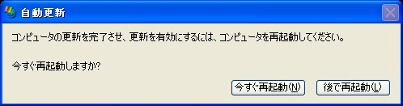
「コンピュータの更新を完了させ、更新を有効にするには、コンピュータを再起動してください。」
用事があって Windows を開いているのでとりあえず「後で再起動」を押すわけですが数分？するとまたダイアログが表示されて邪魔です。
もちろん何か問題があって自分でアップデートしてくれているので重要なダイアログではありますが、作業の妨げになるのは不快です。
そんなとき、左上のアイコンをクリックして「移動」を選択し・・・
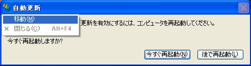
カーソルキーで出来る限り画面の右下にでも追いやってしまいます。
これでダイアログは表示されっぱなしになりますが繰り返し「後で再起動」を押す煩わしさから解放されます。
とてもお粗末な tips ですが、ある程度作業効率を改善する効果があります。
もちろん必要な作業は迅速に終わらせて、早め早めに再起動することをお忘れなく。
追記：
リモートデスクトップでログインした時、ロックを解除した時など激しく画面をリフレッシュするときはダイアログがまた画面内に移動してしまいます。
やはりタイミングを見計らって再起動してあげるのが正攻法ですね。
３０になりました！
おかげさまで３０歳になりました。
３０歳といえばとってもオトナというイメージがありました。
まだまだ子どもの自分がオトナの仲間入りして良いものか、ややとまどいもあります。
でも「まだまだ子どもだ」と思える自分こそがオトナになった証拠なのだろうと信じてこれからもがんばります。
世の中のオトナの方々、今後ともよろしくお願いいたします。
さて、20代にどんなイベントがあったのか思い出してみました。
21歳:
メキメキと腕が伸びた21歳。
・アーチェリーで東京都の国体代表に選ばれる
高校の時は一応代表は代表でも、補欠でちょっと悔しい思いをしました。
学業はほどほどにたくさん練習して成果が出たのが大変嬉しかったです。
残念ながら関東ブロックのミニ国体で３位敗退で本国体は出場ならず。
確か現在は関東で上位４位に入れば本国体に出場できますが、当時は１位通過しないとだめでした。
・全日本選手権大会に出場
国体代表になった勢いで全日本選手権大会にも出場しました。
成績のほうはボロボロ。
22歳:
・大学を卒業
アーチェリーがメイン、学業はほどほどに・・という４年間でしたが卒論はそれなりに面白いテーマを見つけてがんばったつもりです。
終わりよければそれでよしということで。
・就職
子どもの頃からの夢であった、コンピュータ関連の仕事に就職。
不安と期待が入り交じった社会人１年目でした。
良い同僚、先輩、上司に恵まれて非常に良い経験を積むことが出来ました。
現在、アーチェリーに次ぐ趣味である Java を本格的に触り始めたのもこの年です。
25歳:転職
技術的なところと突き詰めてスキルアップしたい、英語を使う機会が欲しいなどとナマイキなことを考えていたところ、憧れのソフトウェアベンダに入社するチャンスが訪れました。
「ガイシケー」ということで「実力主義」、「上司はガイジン」といった環境で緊張感に溢れた職場・・かと思えばそういうことはなく和気藹々とした職場で毎日会社に行くのが楽しくてしょうがなかったです。
メールが中心ではあるものの、狙い通り英語を使う機会にも恵まれ少しずつ読む、書く、喋ることになれていきました。
27歳:結婚
素晴らしいパートナーと素晴らしいスタートを切りました。
今も２人で走り続けています。
27歳:サンフランシスコに出張
「父の仕事の関係」で家族一緒に海外生活(物心つく前ですが)をしたり、たびたび海外出張をしたりする父を見て憧れていました。
ボンヤリと「自分もそのうち海外で仕事ができれば」などと思っていました。
そして BEA では良いチャンスに恵まれて、数回に分けて合計７ヶ月ほどサンフランシスコに滞在することが出来ました。
29歳:また転職
そろそろ Java のなんたるかも分かった気がするし、何か良いステップアップ先は？と模索していたところ、ここ最近何かと世間を騒がしている検索技術に関わることに。
その適用範囲の広さには毎日驚かされています。
また所属部署は BEA 以上にグローバルな組織でより英語を使う機会、特に喋る機会が増えています。
インチキな英語を毎日少しずつでも改善していければと思います。
30歳:←今ココ
成人して以降もここまで立派にやってこられたのはやはり子どものころから一生懸命育ててくれた両親のおかげとしか言いようがありません。
改めまして感謝、感謝、感謝です。
さて、アーチェリーの方は21歳をピークにピタリとイベントがありません。
ちょこちょこと練習をしてはいるものの、正直仕事とか趣味のコーディングを口実に実が入っていません。
「昔は全日行ったことあるんだよ」なんて寂しいこと言わなくて済むよう「今年も全日出るよ！」と言えるようになれば・・・。
仕事の方は正直３年先でさえ自分がどうあるべきなのか、目標はなんなのか、何がしたいのかハッキリとしていません。
目標が漠然としていても今日、明日すべきことは決まっているし、将来の自分に対してとても良い積み重ねになっていることは確かなのですが。
甘い事を言えば、今までその場その場でしたいこと、すべきだと思うことをやってきてそこそこうまいこと行っています。
良く勘が働いているのかな？
今やっていることも将来やってきて良かったなぁと思いたいです。
何しろ現在の充実感は間違ったことをしていない証拠でしょう！
Spring Framework 勉強会
に行って来ました。
・Japan Springframework User Group - 第4回 6/15「Springframework in JavaOne2007 + Spring MVC & WebFlow」
spring.jar をクラスパスに通したことすらない無謀な状態での参加でしたが Spring をとりまく状況を感じることが出来てよかったです。
特にSpring Web Flowの概要についての説明は面白かったです。
リクエスト-レスポンスの羅列だけじゃなくて会話状態遷移を管理するコンポーネントといのは生まれるべくして生まれた感があります。
とはいえ既視感もあって、Beehiveとか、Beehive のベースになっている WebLogic の Workshop フレームワークにもよく似ています。
Beehive から Struts への依存を取り除いて拡張性を高めたもの、と理解しました。
勉強会の後の懇親会ではTwitterclipseとか危険な(?)物を作っている田中さんを初めとしてATL Systemsの方々、オージス総研の方と同席させていただきました。
SIer を離れて久しく、ここ５年くらい趣味ベースでしか開発をやっていないのでなんだか浦島太郎感たっぷり。
第一戦で開発をされている方々は良くアンテナを張っているなーと感心しきり。
ちなみに会社の名刺が切れて飛び出した個人名刺はこれです。
Safari 2 と Safari 3 を同居させる方法!?
lifehackerに Safari2 と Safari 3 を同居させる方法が紹介されていました。
・Tips/How To: Run Safari 3 Beta and Safari 2 at the same time
Safari 3 のインストーラは既存のSafariを上書きしてしまいます。
一旦別ドライブにコピーしておき、Safari 3 をインストール後、Safari v2.app といった名前にリネームして書き戻すと同居できるとのこと。
ちなみに Safari 3 のインストーラは Safari.app が存在しないとインストールできないのでコピーでなくリネームではだめだそうです。
私も、似たようなことをしていて、最初にインストールするときに別ドライブではなく同じドライブにコピーをとっておきました。
一応旧 Safari を起動できるのですがレンダリング性能は Safari 3 と同等になってしまいます。
JavaScript や CSS の検証用にという意味では残念ながらこのテクニックは役に立ちません。
そもそも Safari.app には WebKit が含まれていませんので・・。
JBuilder 2007 インストール
インストールから起動に至るまでのスクリーンショットをとってみました。
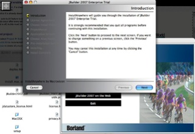
インストーラ初期画面
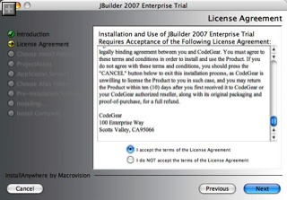
ライセンス
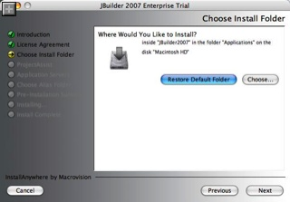
いつものところにインストール
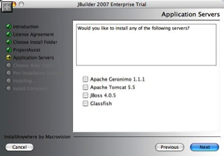
各種オープンソースのサーバを一緒にインストールできるみたい
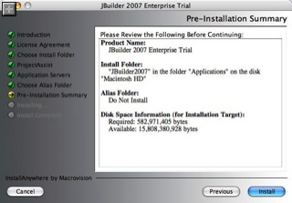
確認画面
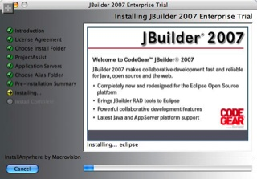
インストール中
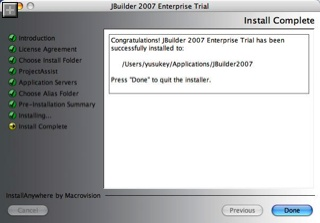
Macintosh HD 直下の Applications フォルダを指定したつもりだけれどもユーザディレクトリ以下に Applications フォルダを掘ってインストールしてくれた・・・
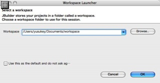
起動直後。Eclipse でお馴染みのワークスペースを選択するダイアログが。
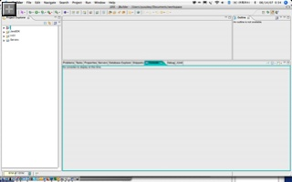
起動後。ん！？まったくもって Eclipse だ！！
「よぉ！久しぶり」
「ん？誰？」
「俺だよ、オ・レ！ JBuilder！」
「え？ Eclipse じゃなくて？」
「Eclipse のパワーを得てより強力になったのさ！」
「そ、そぉ・・・。君もなんだか変わっちゃったね・・・」
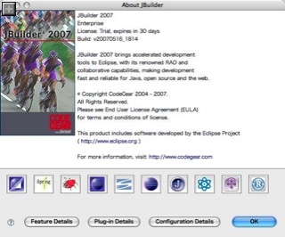
About 画面。アイコンをクリックすると各種プラグインの説明が表示される。
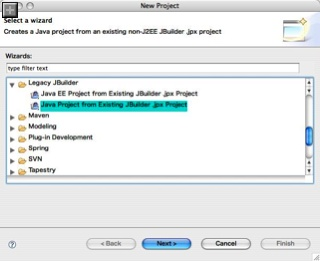
もちろん過去の JBuilder プロジェクトを移行することもできます。
JBuilder 2007 for Mac OSX リリース
JBuilder 2007 の Mac 版がリリースされました。
http://www.codegear.com/products/jbuilder
Windows 版、なんだかんだと試せていませんでした。
とりあえずインストールしてみます。
念のために説明しておくと、JBuilder とはDelphi で有名な Borland がリリースすｒマルチプラットフォームの Java 開発環境です。
会社名が Inprise に変わったり、Borland に戻ったり、IDE 部門の身売りが検討されたりと紆余曲折を経て IDE 部門の別会社化を昨年果たしました。
・CodeGear
元々は OpenTools という独自のプラットフォーム上に構築された非常に軽くて使いやすい IDE でしたが、JBuilder 2007 はかねてより計画されていた Eclipse ベースの初のバージョンとなります。
今は Eclipse, NetBeans, IDEA の３強で影が薄くなっていますが、適応力に乏しい私は幾度となく Eclipse, NetBeans に手を染めては挫折し、手慣れた JBuilder がどうしても手放せません・・。
ちょっと調べたら楽天でも売っていました↓
・JBuilder 2007
無償版の Turbo もあるみたいなんで、購入するかどうか検討します。
Parallels Desktop 3 リリース
Prallels Desktop 3 が正式にリリースされました。
６月１０日にでたビルド番号 4128 がそのまま正式版になったようです。
・Download Parallels Desktop for Mac
私は年末の１年間フリーアップグレードキャンペーン中に買ったので info@parallels.com から新しいアクティベーションコードが届きました。
VMWare の追い上げも激しいですががんばってほしいですね。
じゃんじゃん活用させていただきます！
Mac OSX に MySQL インストール - PostgreSQL とのプチ非互換メモ
MySQL をインストールしたらあとは自家用掲示板アプリの移植です。
Hibernate とかいったカッコイイものは使っていないので非互換の SQL を手動で直していく必要がありました。
といっても直す必要があったのは２点だけ。
・サブクエリのマナー
insert 句の中で select をネストしていた部分が MySQL ではエラーになってしまいました。
mysql> insert into table1 (colmn1,colmun2) values('value1',(select count(*) from table1));
ERROR 1093 (HY000): You can't specify target table 'table1' for update in FROM clauseそんな複雑なクエリじゃないです。Oracle でもこれは通りますね。
MySQL では values のかわりに select 句をそのままもってくると良いようです。
mysql> insert into table1 (colmn1,colmun2) select 'value1', count(*) from table1;このクエリは PostgreSQL でも通りました。
Query OK, 1 row affected (0.11 sec)
Records: 1 Duplicates: 0 Warnings: 0
・シーケンスは？
プライマリキーの生成にシーケンスを使っていましたが、MySQL にはシーケンスがないようです。
かわりにテーブル定義時に "AUTO_INCREMENT" と指定しておくと値を指定しなくても自動的にインクリメントしてくれる仕組みです。
SQL も一発で済むので楽ですね。
どんな値が入るか事前に知る必要がある場合はシーケンス発生用のテーブルを定義する必要がありそう。
Mac OSX に MySQL インストール & 自動起動設定メモ
最近仕事でちょくちょく触るので自宅サーバに MySQL を入れてみました。
PostgreSQL から移行します。
ので、メモ。
・MySQL(バイナリ版)のインストール
このテのソフトをバイナリからインストールしたのは初めてかも！？
楽ちんですね。
# cd /usr/local
# gunzip < mysql-5.0.41-osx10.4-i686.tar.gz | tar xvf -
# ln -s mysql-5.0.41-osx10.4-i686 mysql
# cd mysql
# chown -R mysql .
# chgrp -R mysql .
# scripts/mysql_install_db --user=mysql
# chown -R root .
# chown -R mysql data
・自動起動の設定。
/Library/StartupItems/ 以下にあるアイテムはシステム起動時に勝手に呼び出して起動してくれます。
# mkdir /Library/StartupItems/mysql
# cd /Library/StartupItems/mysql
# vi StartupParameters.plist
----------------------------------
{
Description = "mysql";
Provides = ("mysql");
Requires = ("Disks");
Preference = "Late";
Messages =
{
start = "Starting mysql";
stop = "Stopping mysql";
};
}
----------------------------------
# vi mysql
----------------------------------
#!/bin/sh
. /etc/rc.common
StartService ()
{
ConsoleMessage "Starting MySQL server"
su - mysql -c '/usr/local/mysql/bin/safe_mysqld -u mysql &'
}
StopService()
{
ConsoleMessage "Stopping MySQL server"
su - mysql -c '/usr/local/mysql/bin/mysqladmin -u root shutdown'
}
RestartService ()
{
StopService
StartService
}
RunService "$1"
----------------------------------
# pwd
/Library/StartupItems/mysql
# chmod +x mysql
# ls
StartupParameters.plist mysql
# SystemStarter start mysql
Checking disks
Starting mysqld daemon with databases from /usr/local/mysql/data
# SystemStarter stop mysql
STOPPING server from pid file /usr/local/mysql/data/***.pid
070905 17:48:53 mysqld ended
以上。
次回は PostgreSQL べったりの自家用掲示板アプリの移植で気がついたことを記します。
ずれる電波時計
なにもしなくてもキッチリ時間があってくれるのは気持ちよいもので、腕時計も壁掛け時計も電波時計が好きです。
しかしうちに２つある電波式壁掛け時計の一つが壊れてしまいました。
きっかり４時間遅れてしまうという面白い症状。
秒、分は合っています。
しかも朝出勤前にはずれているのに、夜帰ってくると合っている（ことがある）という気まぐれな症状です。
世界時計につかえる汎用部品を使っていて、タイムゾーンを勘違いしてしまうのでしょうか？
まだ買ってそんなに経っていないのですが・・・。
修理にださないといけませんね。
右の時計が壊れている方
機械が進歩するのはいいですが、故障の仕方も進歩・・ではないですが今までではあり得ない症状がでてくるものですね。
強制電波受信のボタンを押したらさらにおかしな挙動を示しました。
４時、８時、１２時のいずれかで止まって、電波を受信した後時刻を修正してくれるはずなんですが・・・。
様子を YouTube にアップしてみました。
・YouTube - Broken Radio Clock
#YouTubeサイドでのトランスコードに随分時間がかかっていましたがようやく動画が見られるようになりました
ものすごい勢いで回ってますがもちろん早回しとかしてません。
Twitter4J 1.0 リリース
先日 Log4Twitterをリリースしたばかりですが、今度は Twitter4J をリリースしました。
その名の通り、Java からTwitterAPIを操作するためのライブラリで、REST とか XML とか気にせず、タイプセーフに手軽に Twitter をいじることができます。
実際の利用イメージはというと、例えば現在の状態をアップデートするのはこんな感じ。
Twitter twitter = new Twitter(twitterID,twitterPassword);
Status status = twitter.update(latestStatus);
System.out.println("Successfully updated the status to [" + status.getText() + "].");
自分のステータスの更新、public,friends,自分のタイムラインの取得、ダイレクトメッセージの送受信といったメソッドに加え、5月末に実装されたばかりの友達の追加、削除のメソッドにも対応しています。
ライセンスは BSD。
結構サンプルもわかりやすく書いたつもりなので使うのにとまどうことはないと思います。
オープンソースプロジェクトには無償で使えると言うことで、バグトラッキングにはJiraをセットアップしてみました。
・Twitter4J - Jira
まだライセンス請求中の状態ですが。
あと、需要があるかはわかりませんが Google Groups でメーリングリストも作ってみました。
Twitter4J、自分でも既に社内システムをモニタリングして、特定のイベントでアラートを上げるようにして活用しています。
同じタイミングでメールでも通知してるんですが、Twitterrific なんかをつかうと Twitter 友達のアップデートはポップアップ表示されるため、メールによるアラートよりもリアルタイム性が高く反応できるので大変重宝しています。
Parallels Desktop 3.0 RC リリース
Parallels Desktop 3.0 の存在が明らかになってから一週間。
もう RC 版がダウンロードできるようになっています。
・Parallels Desktop 3.0 is LIVE!
http://parallelsvirtualization.blogspot.com/2007/06/parallels-desktop-30-is-live.html
・Download Parallels Desktop for Mac
http://www.parallels.com/en/download/desktop/
動作の様子がわかるビデオも色々とアップされています。
・3D Graphics
・SmartSelect
・SnapShots
ビルド番号は3188から大きく飛んで4124。
追記：
クリスマスセール時に１年間フリーアップグレードライセンスを買ったのですが新バージョンのライセンスを発行するインターフェースが当たりません。
サポートに問いあわせたところ、正式版リリース後に自動的に発行されるとのことです。
もしリリース後数日してもライセンスが発行されない場合は再度問いあわせてくれとのこと。
Steve Jobs and Bill Gates at D5 Conference
最近ちょっと話題になってた JobsとGates のやりとり。
iTunes で配信されていました。
オーディオ版(83.3MB)と映像版(997.4MB)があります。
・Steve Jobs and Bill Gates at D5 Conference
Parallels Desktop 3.0 - Quake4
Parallels Desktop 3.0 で Quake 4 を動かす様子が公開されました。
・YouTube - 3D Graphics in Parallels Desktop for Mac 3.0 - Quake 4
めちゃめちゃひろいデスクトップ上にちんまりと開いている Parallels Desktop 内でしっかりと動いていますね。
YouTube 自体コマが少ないのでどれくらいフレームレートがでているのかわかりませんが画質は十分きれいに見えます。
Parallels Desktop 3.0 リリース間近！
しばらくアップデートがないと思えばバージョン 3.0 の開発にいそしんでいたようです。
動作の様子はこちら →Parallels Desktop 3.0 RC リリース
新機能は以下の通り
・SmartSelect
ファイルタイプにアサインするアプリケーションを Mac、Windows どちらにでも設定出来る機能。
たとえば Mac で Word ファイルを Windows の Word に設定しておけば、ダブルクリックしたとき勝手に Windows 側で開かれます。
また、Windows 側でハイパーリンクをクリックしたら Mac 側の Firefox や Safari が開くように設定することもできるとか。
Coherence でびっくりするくらいの Windows <-> 間のシームレス具合を持ち込んでくれましたが、より一層使い心地が良くなりそうです。
・3D Graphics
待ちに待たれていた DirextX と OpenGL がついにサポート！
年末対応予定と言っていましたが VMWare に刺激したのか随分と前倒しになった様子です。
・Snapshots
VM の状態を予め設定しておいた日時の状態までロールバックさせる機能。
VirtualPC にもある機能ですが、面白いのは VM の状態を複数のバージョンに分岐させることができる（、ようにスクリーンショットからは伺える）こと。
ちょっと環境が汚れるテストをしたいときはいちいちイメージを丸々コピーしていましたが、その必要もなくなりそうです。
他にも 50 を超える新機能がバージョン 3.0 には用意されているとのこと。
バージョン 3.0 は数週間以内にリリースされ、お値段は据え置きの $79.99。
現行バージョンのユーザは $49.99 でアップグレード可能。
今からリリースするまでの間は $39.99 で予約可能。
去年から話題ひっきりなしだった Pralllels ですが、ますます目が離せなくなってきました。
さらに、WWDC では "more big news" があるそうで。
VirtualPC , VMWare の仮想イメージのネイティブサポートでしょうか？